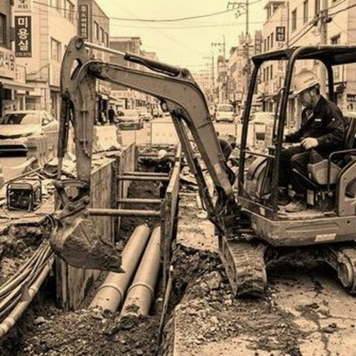
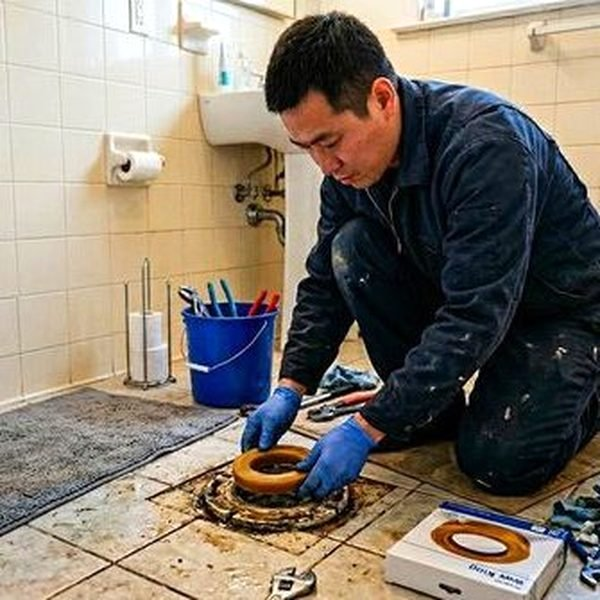
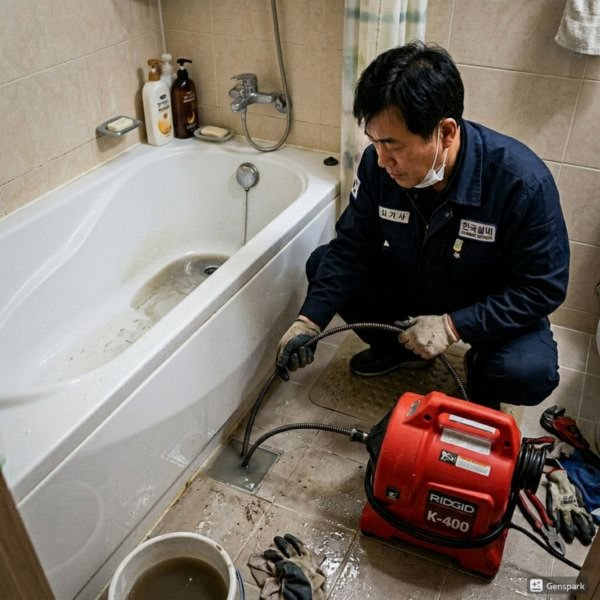

제우스시설관리 | 2025년 4월

음식점 주방은 가정보다 훨씬 복잡한 배수 시스템을 갖춰야 합니다. 부실한 설계는 악취, 해충, 거래처 신고로 이어질 수 있습니다.
일반 가정: 물, 세제, 음식물 → 배관 → 하수도
음식점: 물, 세제, 음식물 + 기름 → 그리스트랩 → 배관 → 하수도
식당은 기름이 많아 단순한 배수관으로는 막힘과 악취 문제를 피할 수 없습니다. 따라서 그리스트랩이 필수입니다.
그리스트랩은 배수 내 기름을 분리하여 저장하는 장치입니다:
• 뜨거운 기름과 음식물이 들어옴
• 온도가 내려가면서 기름이 분리됨
• 기름은 위에, 고형물은 아래에 침전
• 맑은 물만 배수관으로 배출
이 과정이 효율적이지 않으면 배관이 빨리 막힙니다.
식당 규모에 따라 최소 용량이 정해집니다:
• 소형 카페: 300L 이상
• 일반 식당: 500~1000L
• 대형 레스토랑/회전식 고기집: 1500L 이상
용량이 작으면 자주 청소해야 하고, 자주 차면 악취가 심해집니다.
법적 의무: 월 1회 이상 청소
실제 권장: 주 1~2회 (심한 경우 매일)
그리스트랩을 제때 청소하지 않으면:
• 악취로 인한 민원 (이웃, 구청 신고)
• 배관 역류로 주방 운영 중단
• 과태료 및 행정처벌
1. 배수 동선 단순화
모든 주방 싱크, 세척대가 한 그리스트랩으로 모이도록 배관을 설계합니다. 여러 그리스트랩은 관리 복잡도를 증가시킵니다.
2. 급경사 배관 피하기
배관이 너무 급하면 물은 빠르게 흐르지만 기름과 음식물은 남아 막힘이 발생합니다. 약 2~3% 정도의 완만한 경사가 이상적입니다.
3. 내부 청소 가능하도록 설계
정기적인 내시경 검사와 청소가 가능하도록 접근성 좋은 위치에 배치합니다.
4. 환기 배관 추가
악취를 외부로 배출할 환기 배관을 그리스트랩 상부에 연결합니다.
✓ 매일 사용 후 큰 음식물 찌꺼기 제거
✓ 뜨거운 물로 배관 헹굼
✓ 그리스트랩 상층 기름 주 1회 제거
✓ 매월 전문가 청소 받기
✓ 배수 냄새 발생 시 즉시 점검
식당의 배수 시스템은 위생뿐 아니라 법적 의무이므로, 설계 단계부터 전문가와 상의하여 진행하는 것이 좋습니다.

